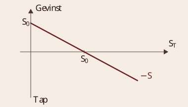
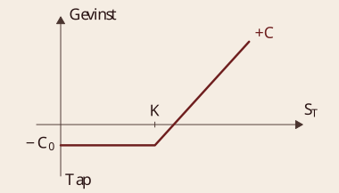
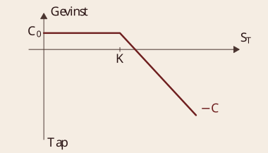
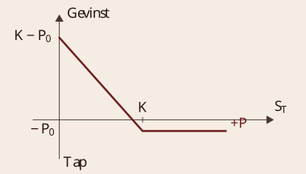
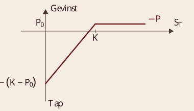
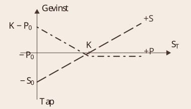
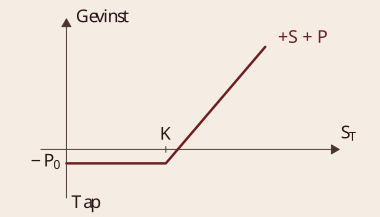
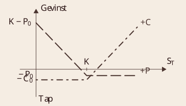
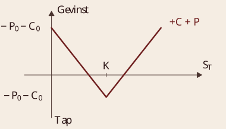
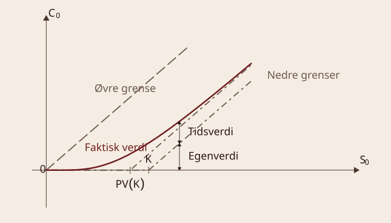

Opsjonskontrakter
BED3 — Investering og finans · Forelesning 14
Norges Handelshøyskole
Problemstillinger
- Opsjonskontrakter og opsjonshandel
- Definisjon
- Aktiviteter på opsjonsmarkedet
- Kontantstrømsdiagrammer (verdi ved forfall)
- Underliggende aktivum (spot)
- Kjøps- og salgsopsjoner
- Strategier på opsjonsmarkedet
- Sikring og spekulasjon med bruk av opsjonskontrakter
- Put-call paritet
- Sammenhenger mellom verdien på kjøpsopsjon, salgsopsjon og spot
- Prising av opsjonskontrakter
- Naturlige grenser for verdien av en opsjon
- Underliggende faktorer som påvirker verdien av en opsjon
- Black-Scholes opsjonsprisingsmodell
Introduksjon til opsjoner
Valgmuligheter: en rett, men ikke plikt
Opsjonshandel
Definisjon — opsjoner Innehaver har rett, men ikke plikt til å kjøpe (selge) et underliggende aktivum (eiendel) til en avtalt kontraktspris på eller innen et bestemt tidspunkt.
- To varianter av standard opsjoner
- Kjøpsopsjon (callopsjon) — rett til å kjøpe underliggende aktivum («kjøpe billig»)
- Salgsopsjon (putopsjon) — rett til å selge underliggende aktivum («selge dyrt»)
- Utøvelse av opsjoner — europeisk type utøves på et tidspunkt, amerikansk type utøves innen et tidspunkt
Kontrakten for kjøper og selger
En opsjonskontrakt er asymmetrisk: den ene parten har en rett, den andre har en plikt.
| Kjøper (innehaver) | Selger (utsteder) |
|---|---|
| Rett | Plikt |
| Betaler premie | Mottar premie |
| Oppside | Nedside |
Ulike opsjonskontrakter — mange anvendelsesområder
- Finansielle opsjoner (eksempler på omsatt finansaktivum)
- Aksjeopsjoner (Hydro)
- Valutaopsjoner (euro)
- Renteopsjoner (statsobligasjon)
- Opsjoner på finansielle indekser (OBX) og futureskontrakter (gull)
- Opsjoner på fysiske varer (eksempler)
- Hvete, olje, korn, fly, hotell, etc.
- Implisitte finansielle opsjoner (eksempler)
- Egenkapital og fremmedkapital
- Tegningsretter og fulltegningsgarantier
- Kjøpsretter
- Konvertible obligasjoner og aksjeindeksobligasjoner
- Betinget krav (contingent claim) — generalisert derivat
- Realopsjoner: verdi av fleksibilitet ved investeringsprosjekt
Grunnleggende finansielle opsjoner representerer byggeklosser for andre finans- og realaktiva (financial engineering), for å konstruere ulike kontantstrøms- og risikoprofiler.
Aktiviteter/motiver
- Risikostyring/sikring (hedging)
- Sikre/avlaste risiko i underliggende aktivum
- Spekulasjon (trading)
- Ta risiko ut fra oppfatninger/informasjon (investeringsmarked)
- Arbitrasje — utnytte (midlertidig) relativ prisforskjell mellom
- Ulike opsjonskontrakter
- Opsjon og underliggende aktivum
- Kostnadseffektivitet
- Redusere transaksjonskostnader (f.eks. i forhold til kjøp av underliggende)
- Utvidet mulighetsområde
- «Omgå» regler og restriksjoner (f.eks. shortsalg)
- Informasjonsinnhenting
- Avdekke informasjon/avlese prognoser (f.eks. implisitt volatilitet)
Quiz: introduksjon til opsjoner
Q1: Hva er de to hovedtypene av opsjoner, og hva kjennetegner dem? Kjøpsopsjon (call option): gir innehaveren retten, men ikke plikten, til å kjøpe et underliggende aktivum til en forhåndsavtalt pris (K) før eller på utløpsdatoen. Salgsopsjon (put option): gir innehaveren retten, men ikke plikten, til å selge underliggende aktivum til en forhåndsavtalt pris før eller på utløpsdatoen.
Q2: Hva er forskjellen mellom en europeisk og en amerikansk opsjon? En europeisk opsjon kan kun utøves på utløpsdatoen, mens en amerikansk opsjon kan utøves når som helst før eller på utløpsdatoen.
Q3: Hva er forskjellen mellom kjøperen og selgeren av en opsjon? Kjøper har retten, men ikke plikten, betaler en opsjonspremie og har ubegrenset oppside og begrenset nedside. Selger har plikten til å selge (call) eller kjøpe (put) underliggende dersom opsjonen utøves. Selger mottar opsjonspremien som betaling for å ta denne risikoen, og har begrenset gevinst og potensielt ubegrenset tap.
Kontantstrømmer for opsjoner
Gevinst, tap og verdi ved forfall
Kontantstrøm på forfall — spot

i) Lang posisjon i underliggende aktivum
- S_T = spotpris ved tidspunkt T
- S_0 = dagens spotpris

ii) Kort posisjon i underliggende aktivum
- Kjøpe/inneha = lang (long), positiv posisjon
- Selge/skrive/utstede = kort (short), negativ posisjon
Kontantstrøm på forfall — kjøpsopsjon (call)

iii) Lang posisjon i kjøpsopsjon (call)
- Verdi av kjøpsopsjon ved tidspunkt T: C_T = \max(0, S_T - K)

iv) Kort posisjon i kjøpsopsjon (call), selgeren mottar premien C_0
- C = verdi av kjøpsopsjon/premie
- K = kontraktspris
- C_0 = dagens verdi/premie
Eksempel: verdi av en kjøpsopsjon
Eksempel — callopsjon med utøvelse om ett år Anta at vi kan kjøpe en kjøpsopsjon for C_0 = 5{,}70 kr i dag, med kontraktpris K = 82 kr. Opsjonen er av europeisk type og kan utøves om nøyaktig ett år (T=1).
- Hvis kursen om et år er S_T = 92 kr
- Hvis kursen om et år er S_T = 72 kr
Verdi: C_T = \max(0, S_T - K) = \max(0, 92 - 82) = 10 kr
Profitt: \Pi = C_T - C_0 = 10 - 5{,}70 = 4{,}30 kr
Verdi: C_T = \max(0, S_T - K) = \max(0, 72 - 82) = 0 kr
Profitt: \Pi = C_T - C_0 = 0 - 5{,}70 = -5{,}70 kr (tap begrenset til opsjonspremien)
En kjøpsopsjon har ubegrenset oppside, men tapet er begrenset til premien.
Kontantstrøm på forfall — salgsopsjon (put)

v) Lang posisjon i salgsopsjon (put)
- Verdi av salgsopsjon ved tidspunkt T: P_T = \max(K - S_T, 0)

vi) Kort posisjon i salgsopsjon (put)
- P = verdi av salgsopsjon/premie
- P_0 = dagens verdi/premie
Eksempel: verdi av en salgsopsjon
Eksempel — putopsjon med utøvelse om ett år Anta at vi kan kjøpe en salgsopsjon for P_0 = 3{,}80 kr i dag, med kontraktpris K = 82 kr. Opsjonen er av europeisk type og kan utøves om nøyaktig ett år (T=1).
- Hvis kursen om et år er S_T = 92 kr
- Hvis kursen om et år er S_T = 72 kr
Verdi: P_T = \max(0, K - S_T) = \max(0, 82 - 92) = 0 kr
Profitt: \Pi = P_T - P_0 = 0 - 3{,}80 = -3{,}80 kr (tap begrenset til opsjonspremien)
Verdi: P_T = \max(0, K - S_T) = \max(0, 82 - 72) = 10 kr
Profitt: \Pi = P_T - P_0 = 10 - 3{,}80 = 6{,}20 kr
En salgsopsjon beskytter mot kursfall og gir gevinst hvis prisen synker.
Eksempel: aksje + putopsjon
Eksempel — samlet gevinst ved å eie en aksje og en putopsjon Anta at vi eier en aksje og samtidig kjøper en putopsjon med kontraktpris K = 80 kr. Opsjonen koster P_0 = 2 kr i dag, og vi beregner samlet gevinst for ulike aksjekurser ved forfall.
| S_T | P_T | P_0 | S_0 | Gevinst | Utregning |
|---|---|---|---|---|---|
| 60 | 20 | 2 | 80 | −2 | 60 + 20 - 2 - 80 = -2 |
| 70 | 10 | 2 | 80 | −2 | 70 + 10 - 2 - 80 = -2 |
| 80 | 0 | 2 | 80 | −2 | 80 + 0 - 2 - 80 = -2 |
| 90 | 0 | 2 | 80 | 8 | 90 + 0 - 2 - 80 = 8 |
| 100 | 0 | 2 | 80 | 18 | 100 + 0 - 2 - 80 = 18 |
Kombinasjonen av aksje og putopsjon gir beskyttelse mot nedside, men lar oppsiden være åpen.
Strategier — sikring (protective put)

Individuelle komponenter

Samlet posisjon
Protective put — aksje og salgsopsjon (S_0 = K) Full sikring nedad, samtidig som gevinstprofilen (på et lavere nivå) beholdes. Relativt høyt premieutlegg, så sant ikke et lavt gulv aksepteres.
Eksempel: straddle strategi (spekulasjon)
Eksempel — samlet gevinst ved en straddle-strategi Anta at vi kjøper både en kjøpsopsjon (call) og en salgsopsjon (put) med kontraktpris K = 80 kr. Call-opsjonen koster C_0 = 5 kr og put-opsjonen koster P_0 = 2 kr i dag. Vi beregner samlet gevinst for ulike aksjekurser ved forfall.
| S_T | C_T | P_T | C_0 | P_0 | Gevinst | Utregning |
|---|---|---|---|---|---|---|
| 60 | 0 | 20 | 5 | 2 | 13 | 0 + 20 - 5 - 2 = 13 |
| 70 | 0 | 10 | 5 | 2 | 3 | 0 + 10 - 5 - 2 = 3 |
| 80 | 0 | 0 | 5 | 2 | −7 | 0 + 0 - 5 - 2 = -7 |
| 90 | 10 | 0 | 5 | 2 | 3 | 10 + 0 - 5 - 2 = 3 |
| 100 | 20 | 0 | 5 | 2 | 13 | 20 + 0 - 5 - 2 = 13 |
Straddle-strategien gir gevinst ved store kursbevegelser, uavhengig av retning.
Strategier — spekulasjon (straddle)

Individuelle komponenter

Samlet posisjon
Straddle — kjøps- og salgsopsjon Kjøpe gevinstmuligheter i begge retninger — spekulere i stor prisendring (volatilitet). Bunnpunktet i den samlede posisjonen er K - P_0 - C_0.
Quiz: kontantstrømmer og opsjonsstrategier
Q1: Hva er kontantstrømmen for en kjøpsopsjon (call) ved forfall? Hvis S_T > K: opsjonen utøves, gevinst S_T - K. Hvis S_T \leq K: opsjonen utløper verdiløs. Netto gevinst: \max(0, S_T - K) - C_0.
Q2: Hva er en «protective put»-strategi, og når brukes den? Definisjon: kjøp av aksje + kjøp av putopsjon. Formål: beskytte mot kursfall, men beholde oppside. Bruk: når investoren eier aksjen, men vil begrense tap.
Q3: Hvordan fungerer en «straddle»-strategi, og når er den mest lønnsom? Definisjon: kjøp av call + kjøp av put med samme strike. Formål: spekulasjon på høy volatilitet. Lønnsomhet: når store kursbevegelser forventes, f.eks. før nyheter eller inntjeningsrapporter.
Put-call paritet
Sammenhengen mellom kjøps- og salgsopsjoner
Put-call paritet — instrumentsammenhenger
| Verdi i dag | Verdi ved forfall, S_T < K | Verdi ved forfall, S_T \geq K | |
|---|---|---|---|
| Kjøp aktivum | -S_0 | S_T | S_T |
| Kjøp put | -P_0 | K - S_T | 0 |
| Utsted call | C_0 | 0 | -(S_T - K) |
| Samlet verdi | S_0 + P_0 - C_0 | K | K |
Uansett prisen på tidspunkt T vil vi motta K. Verdien av denne porteføljen i dag må derfor være nåverdien av K, neddiskontert med risikofri rente (r_f).
Put-call pariteten:
S_0 + P_0 - C_0 = \frac{K}{1 + r_f}
Put og call er det samme som aksje og lån:
C_0 - P_0 = S_0 - PV(K)
Put-call paritet — definisjon
Definisjon — put-call paritet Put-call pariteten beskriver det fundamentale forholdet mellom verdien av en kjøpsopsjon (call), en salgsopsjon (put) på samme aktivum (S) og med samme kontraktspris (K).
C - P = S - K e^{-rT}
- C = verdien av kjøpsopsjonen (call)
- P = verdien av salgsopsjonen (put)
- S = spotpris på underliggende aktivum
- K = kontraktpris (strike)
- r = risikofri rente
- T = tid til forfall
Put-call pariteten sikrer at det ikke oppstår arbitrasjemuligheter i markedet.
Put-call paritet: eksempel
Eksempel — er opsjonene priset korrekt? Anta at en aksje handles i dag for S_0 = 80 kr. Vi har følgende opsjonspriser for strike K = 82:
- Salgsopsjon (put): P_0 = 3{,}80 kr
- Kjøpsopsjon (call): C_0 = 5{,}70 kr
- Risikofri rente: r = 5\ \% p.a.
- Opsjonenes løpetid: T = 1 år
| Posisjon | Verdi i dag | Verdi ved forfall, S_T = 72 | Verdi ved forfall, S_T = 92 |
|---|---|---|---|
| Kjøpe aksje | -80 | 72 | 92 |
| Kjøpe put | -3{,}80 | 10 | 0 |
| Utstede call | 5{,}70 | 0 | -10 |
| Verdi | 78,10 | 82 | 82 |
r_f = 5\ \% \Rightarrow \frac{82}{1{,}05} = 78{,}10
Put-call paritet: lange og korte posisjoner
| Type | Lang posisjon | Kort posisjon |
|---|---|---|
| Spot | S = C + PV(K) - P | -S = P - C - PV(K) |
| Kjøpsopsjon | C = S - PV(K) + P | -C = PV(K) - S - P |
| Salgsopsjon | P = C + PV(K) - S | -P = S - C - PV(K) |
Put-call paritet: kvalitativ og kvantitativ innsikt
| Kvalitativ innsikt | Kvantitativ innsikt |
|---|---|
| Prinsipielt kun én type opsjon. Put- og call-opsjoner er beslektet og kan syntetiseres fra hverandre. En aksje- og opsjonsportefølje kan replikeres med opsjonskombinasjoner. | Prising. Put-call pariteten gir en formel for riktig prising av opsjoner. Hvis pariteten ikke holder, oppstår muligheter for risikofri gevinst. Kombinasjon av posisjoner kan skape syntetiske aktiva (aksje, opsjon). |
Holder put-call pariteten?
\begin{aligned} S_0 &= 5{,}70 + \frac{82}{1{,}05} - 3{,}80 = 80 \\ C_0 &= 80 - \frac{82}{1{,}05} + 3{,}80 = 5{,}70 \\ P_0 &= 5{,}70 + \frac{82}{1{,}05} - 80 = 3{,}80 \end{aligned}
Opsjonene er riktig priset.
Quiz: put-call paritet
Q1: Hva er hovedformelen for put-call paritet? C - P = S - K e^{-rT}. Denne formelen viser sammenhengen mellom prisen på en kjøpsopsjon (C) og en salgsopsjon (P) med samme underliggende aktivum, strikepris (K) og tid til forfall (T).
Q2: Hva betyr put-call pariteten i praksis? Put-call pariteten sikrer at det ikke finnes arbitrasjemuligheter i markedet. Hvis formelen ikke holder, kan investorer sette sammen porteføljer som gir risikofri gevinst.
Q3: Hva skjer hvis put-call pariteten ikke holder, og hvordan kan en investor utnytte dette? Hvis C - P \neq S - K e^{-rT}, finnes en arbitrasjemulighet: er venstresiden størst, selg call, kjøp put, kjøp aksjen og lånefinansier K e^{-rT}; er høyresiden størst, kjøp call, selg put, selg aksjen og invester K e^{-rT} risikofritt. I begge tilfeller skapes en risikofri gevinst.
Opsjonsprising
Hva bestemmer verdien av en opsjon?
Opsjonsprising — oversikt
- En opsjon er en eiendel (en sekvens av kontantstrømmer)
- Startkostnad: betaling av opsjonspremie ved kjøp
- Fremtidige utbetalinger: call gir mulig gevinst hvis aksjekursen overstiger innløsningskursen, put gir mulig gevinst hvis aksjekursen faller under innløsningskursen — ellers utløper opsjonen uten verdi
For å prise en opsjon estimerer vi de forventede fremtidige kontantstrømmene og diskonterer dem til nåverdi. Noen grunnleggende modeller:
- Binomialmodell — bruker en trestruktur for å modellere mulige prisbevegelser over tid
- Black-Scholes-modellen — gir en lukket formel for prising av europeiske opsjoner basert på aksjekurs, innløsningskurs, tid til utløp, risikofri rente og volatilitet
- Monte Carlo-simuleringer — brukes for mer komplekse opsjoner ved å simulere mange mulige fremtidige prisbaner
Opsjonens verdi i dag reflekterer de forventede kontantstrømmene fra mulige utfall på forfallstidspunktet.
Grenseverdier for prisen på en kjøpsopsjon
| Ulikhet | Beskrivelse |
|---|---|
| C_0 \leq S_0 | Kan ikke koste mer enn underliggende aktivum (aksje). |
| C_0 \geq 0 | Rett, men ikke plikt — opsjonen kan ikke ha negativ verdi. |
| C_0 \geq S_0 - K | Verdi ved øyeblikkelig utøvelse (for amerikanske opsjoner). |
| C_0 \geq S_0 - PV(K) | Forfallsverdi — tilsvarer nåverdien av utøvelse ved forfall. |
Opsjonsverdi kan dekomponeres i:
\text{Opsjonsverdi} = \text{Egenverdi} + \text{Tidsverdi}
Opsjonsverdi — egenverdi og tidsverdi
Egenverdi (intrinsic value)
- Den umiddelbare gevinsten hvis opsjonen utøves i dag
- For en kjøpsopsjon (call): \text{Egenverdi} = \max(0, S_t - K)
- In-the-money (S_t > K): positiv egenverdi
- Out-of-the-money (S_t \leq K): egenverdi lik 0
Tidsverdi (time value)
- Reflekterer muligheten for at opsjonen øker i verdi før utløp: \text{Tidsverdi} = C_0 - \text{Egenverdi}
- Avhenger av tid til utløp (lenger tid gir høyere tidsverdi), volatilitet (høyere volatilitet gir større sannsynlighet for store prisbevegelser) og rentenivå (høyere risikofri rente gjør det mer attraktivt å utsette betaling av strikeprisen)
- Er 0 ved utløp, siden opsjonen da enten har kun egenverdi eller utløper verdiløs
Opsjonsprisen består av både en iboende verdi og en forventningsverdi basert på markedets usikkerhet.
Grunnleggende grenser for opsjonsprising
Opsjoner må prises slik at det ikke oppstår arbitrasjemuligheter. Følgende grenser må derfor gjelde:
- C_0 \leq S_0 — en opsjon kan aldri koste mer enn aksjen
- Kostet en kjøpsopsjon mer enn aksjen selv, kunne en investor tjene penger umiddelbart ved å selge opsjonen og kjøpe aksjen direkte
- Dette ville være en risikofri gevinst (arbitrasje), noe som ikke er mulig i et effektivt marked
- C_0 \geq 0 — en opsjon gir en rett, men ingen plikt, og kan derfor aldri ha negativ verdi
- Hadde en opsjon negativ verdi, kunne investorer få betalt for å motta den, men aldri måtte bruke den
- Dette gir ingen økonomisk mening, så opsjonspriser må alltid være C_0 \geq 0
- C_0 \geq S_0 - K (kun amerikanske opsjoner) — kan alltid utøves umiddelbart, så verdien må være minst like stor som den umiddelbare gevinsten
- Er opsjonen «dypt in-the-money» (S_0 \gg K), kan eieren kjøpe aksjen til strikepris K og umiddelbart selge den til S_0 — en gevinst på S_0 - K
- Dette setter en nedre grense for verdien av en amerikansk kjøpsopsjon
- C_0 \geq S_0 - PV(K) — for en europeisk opsjon må verdien være minst nåverdien av gevinsten ved forfall
- En europeisk opsjon kan kun utøves ved forfall, så laveste verdi i dag er S_0 - PV(K)
- Den kan derfor være mindre verdt enn en amerikansk opsjon, fordi den ikke kan utøves tidlig
Grenseverdier for prisen på en kjøpsopsjon (forts.)

Opsjonsprising — underliggende faktorer
Hvordan verdien av en opsjon påvirkes av underliggende faktorer:
| Underliggende faktor | Kjøpsopsjon | Salgsopsjon |
|---|---|---|
| Dagens aksjepris (S_0) | + | − |
| Kontraktspris (K) | − | + |
| Tid til forfall (T) | + | + |
| Aksjens kurssvingning (\sigma) | + | + |
| Risikofri rente (r_f) | + | − |
- Volatilitet (standardavvik) er viktigst — man betaler/får betalt for svingninger
- Historisk volatilitet
- Implisitt volatilitet
- Forventet volatilitet
\Delta = \frac{\partial C}{\partial S} = \frac{\text{endring i opsjonspris}}{\text{endring i aksjepris}}
Opsjonens sensitivitet for endringer i aksjekursen.
Opsjonsprising — Black-Scholes
Black-Scholes opsjonsprisingsmodell: C_0 = f(S_0, K, T, r_f, \sigma) (e er grunntallet i den naturlige logaritmen)
\begin{aligned} C_0 &= S_0 \cdot N(d_1) - K \cdot e^{-r_f T} \cdot N(d_2) \\ d_1 &= \frac{\ln(S_0 / K) + r_f T}{\sigma \sqrt{T}} + \frac{1}{2} \sigma \sqrt{T} \\ d_2 &= d_1 - \sigma \sqrt{T} \end{aligned}
N(d_1) = \int_{-\infty}^{d_1} f(z)\, dz
- Deltasikring: delta aksjer per utstedt kjøpsopsjon, eller 1/\Delta kjøpsopsjoner per aksje
- N(d_2) er sannsynligheten for at opsjonen er verdifull ved forfall
Quiz: opsjonsprising og grenseverdier
Q1: Hva er de to hovedkomponentene i opsjonsprising? Egenverdi: forskjellen mellom spotprisen og strikeprisen hvis opsjonen er in-the-money, \text{Egenverdi} = \max(0, S_0 - K). Tidsverdi: reflekterer muligheten for at opsjonen kan øke i verdi før utløp, \text{Tidsverdi} = C_0 - \text{Egenverdi}.
Q2: Hva er de naturlige grenseverdiene for en kjøpsopsjon (call)? C_0 \leq S_0 — kan ikke koste mer enn aksjen. C_0 \geq 0 — kan ikke ha negativ verdi. C_0 \geq S_0 - K — for amerikanske opsjoner, som kan utøves når som helst. C_0 \geq S_0 - PV(K) — for europeiske opsjoner, der strikeprisen diskonteres.
Q3: Hvordan påvirker volatilitet verdien av en opsjon? Høyere volatilitet øker sannsynligheten for store prisbevegelser, som øker verdien av både kjøps- og salgsopsjoner: \partial C/\partial \sigma > 0, \partial P/\partial \sigma > 0. Tidsverdien øker også, siden større usikkerhet gir høyere forventet opsjonspris.
Oppsummering
Oppsummering: grunnleggende om opsjoner
Hva er en opsjon?
- En kjøpsopsjon (call) gir retten til å kjøpe et aktivum til en forhåndsavtalt pris
- En salgsopsjon (put) gir retten til å selge et aktivum til en forhåndsavtalt pris
- Opsjoner gir fleksibilitet, men koster en premie
Nøkkelkonsepter
- Egenverdi (for call): \max(0, S_0 - K) — forskjellen mellom spotpris og strike
- Tidsverdi: C_0 - \text{egenverdi} — verdien av tid og volatilitet
- Amerikansk vs. europeisk opsjon: amerikanske opsjoner kan utøves når som helst, europeiske kun ved forfall
Grenseverdier for en kjøpsopsjon:
0 \leq C_0 \leq S_0, \quad C_0 \geq S_0 - PV(K)\ \text{(europeisk)}
Opsjoner gir rett, men ikke plikt — og prisingen reflekterer denne fleksibiliteten.
Oppsummering: put-call paritet, prising og strategier
Put-call paritet
C - P = S - K e^{-rT}
- Sikrer at det ikke finnes arbitrasjemuligheter
- Knytter sammen priser på kjøps- og salgsopsjoner
Opsjonsprising: Black-Scholes
C_0 = S_0 N(d_1) - K e^{-rT} N(d_2)
- Avhenger av S_0, K, T, r, \sigma
- Volatilitet og tid til forfall er kritiske faktorer
Vanlige opsjonsstrategier
- Protective put: sikrer aksjeinvestering mot kursfall
- Straddle: spekulasjon på høy volatilitet